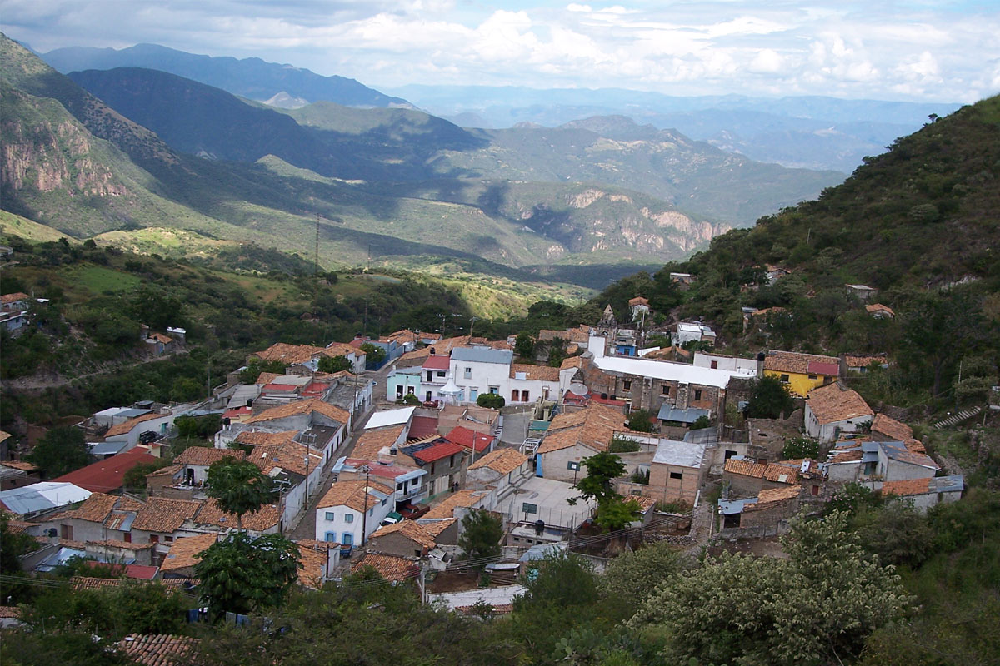
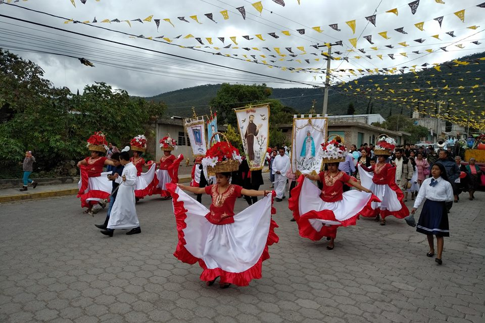
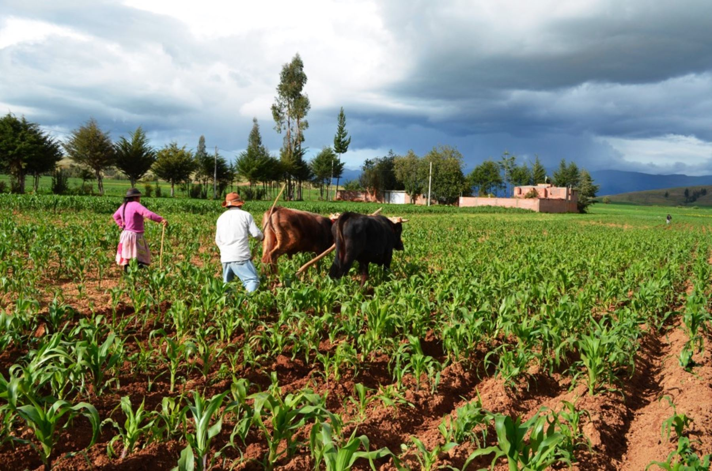

La Yesca es un municipio ubicado en la regi n norte de Nayarit, M xico. Limita al norte con el estado de Jalisco, al sur con los municipios de Tepic y Xalisco, al este con el municipio de Huajicori y al oeste con el municipio de Bah a de Banderas. La Yesca es conocida por su entorno natural y paisajes monta osos.
Las festividades m s importantes de La Yesca incluyen la fiesta en honor a San Juan Bautista, que se celebra el 24 de junio. Tambi n son destacadas las fiestas patronales y religiosas, con eventos como procesiones y danzas tradicionales, que atraen a muchos visitantes cada a o.
La econom a de La Yesca est basada principalmente en la agricultura, destacando la producci n de ma z, frijol, chile y hortalizas. Tambi n se da la ganader a, particularmente la cr a de bovinos. Adem s, la pesca y actividades forestales son importantes en algunas reas del municipio, gracias a sus r os y monta as.
